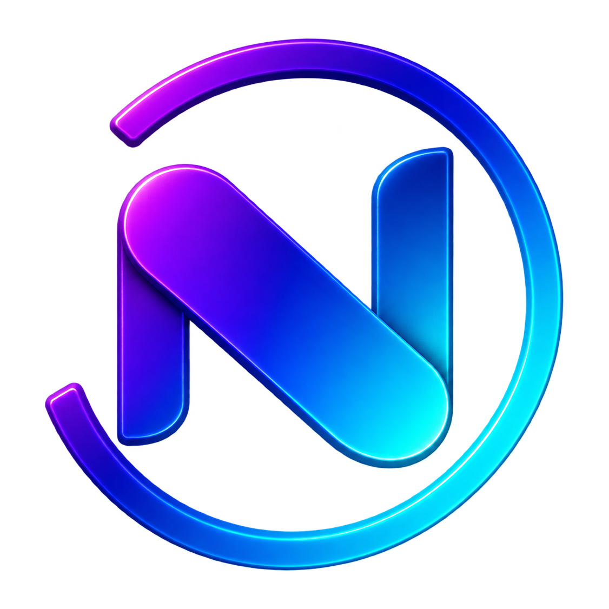

＋
←
→
↻
◐
⋮
NOLP
Next · Óptima · Local · Privada
Vista preliminar de la interfaz Aero. El motor Gecko todavía no está conectado. No se cargan sitios web.
Prototipo UI · Sin conexión con Gecko · Sin telemetría propia